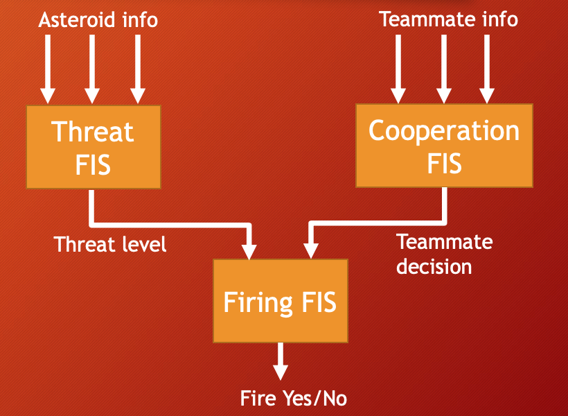
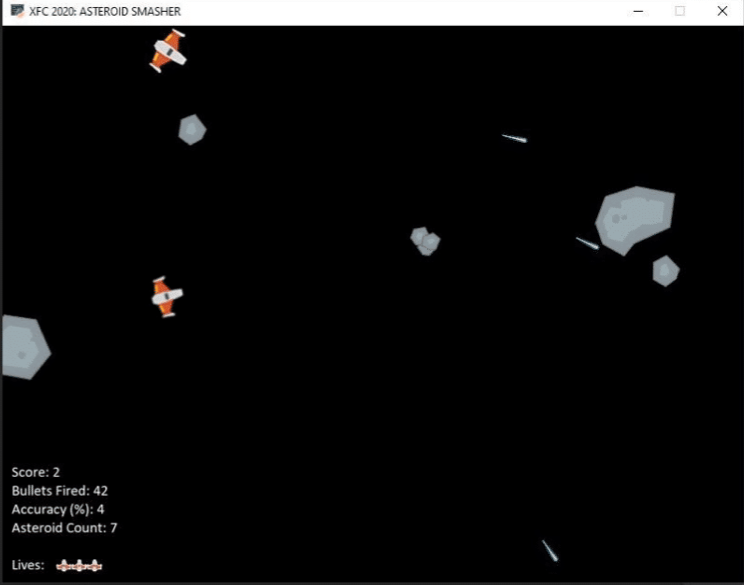
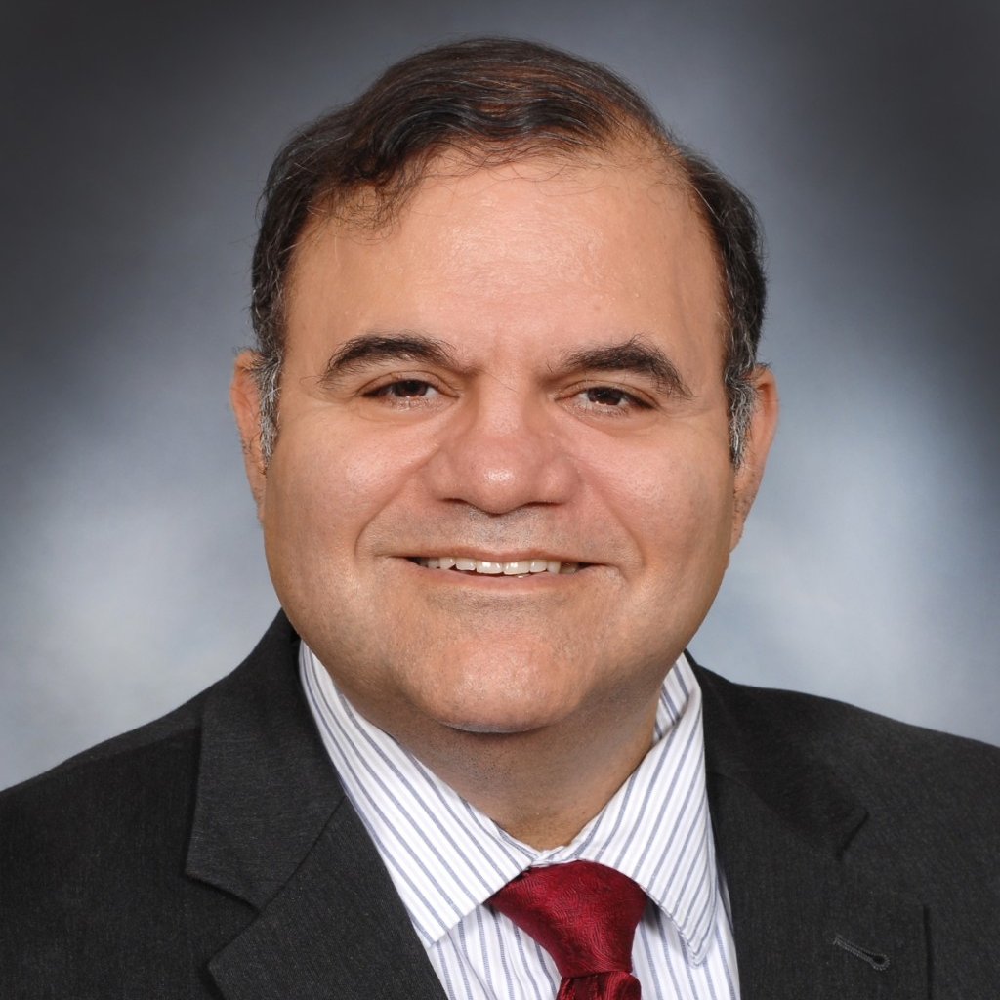

XFC started in 2021 with the goal of exposing students to the power of Genetic Fuzzy Systems, while also highlighting the explainability inherent to these types of systems.
Advances in AI technologies, brought forth by deep learning architectures, are incredible. There are cases where deep neural network driven models can rival human level performance but even the best performing models are driven by policies that are difficult, or in some cases impossible, to understand.

The teams will create fully autonomous eXplainable AI (XAI) algorithms, in Python, that are able to play the game “Asteroid Smashers”.
In the game, 2-dimensional spacecraft move to avoid collisions with numerous asteroids that appear. The asteroids have different shapes, sizes and velocities. The spacecraft is equipped with a laser to deal with those pesky space rocks. If the projectiles launched reach any of the targets, they break into smaller pieces. A control system must consider all the different features of the system and determine the movement and shooting decisions of the spacecraft. This year the challenge includes controlling a single spacecraft or a squadron, working together, to dispose of every last asteroid we can throw at you.

XFC was born out of a collaboration between Thales USA, the University of Cincinnati, and Complex Engineering Systems Journal.
Dr. Timothy Arnett is the AI Verification Lead at Thales in Cincinnati. His focus is on development of Genetic Fuzzy Tree-based AI methods along with their verification using Formal Methods. His graduate work at the University of Cincinnati was mainly devoted to work on the scalability and verifiability of Fuzzy Systems.

Dr. Kelly Cohen is the Brian H. Rowe endowed Chair in the Department of Aerospace Engineering and Engineering Mechanics at the University of Cincinnati. His main expertise lies in the area of Artificial Intelligence (AI), intelligent systems, UAVs and optimization. He has utilized genetic fuzzy logic-based algorithms for control and decision-making applications in the area of autonomous collaborating robotics as well as predictive modeling for personalizing medical treatment in neurological disorders. During the past seven years, he has secured grants from NSF, NIH, USAF, DHS and NASA to develop algorithms for UAV applications as well as AI for bio-medical applications. He has over 65 per reviewed archival publications, and another 270 conference papers/presentations, and invited seminars.
Dr. Nick Ernest is a graduate of the University of Cincinnati's College of Aerospace Engineering & Engineering Mechanics. The focus of his research is genetic fuzzy artificial intelligence and he founded Psibernetix Inc. to develop these systems for clients primarily within the defense & aerospace domain. In 2018 Psibernetix was acquired by Thales, a Paris-headquartered global leader within this area. Dr. Ernest now serves as Chief Architect for Thales Avionics, Inc., based out of Cincinnati.
Zach has a B.S. in Aerospace Engineering from the University of Cincinnati and is an AI researcher at Thales Avionics.
Lynn is a PhD candidate in Aerospace Engineering, with a focus on Genetic Fuzzy Systems under Dr. Kelly Cohen at the University of Cincinnati. She has multiple publications and is a Fulbright Scholar working on a grant at Ghent University as well as a Rindsburg Fellow.
Sam holds a Master's degree in Aerospace Engineering and worked in the Intelligent Robotics and Research Lab. His research includes; Autonomous systems, Mobile robots, and Artificial Intelligence. He recently accepted role of Senior Autonomy Engineer at Intramotev.